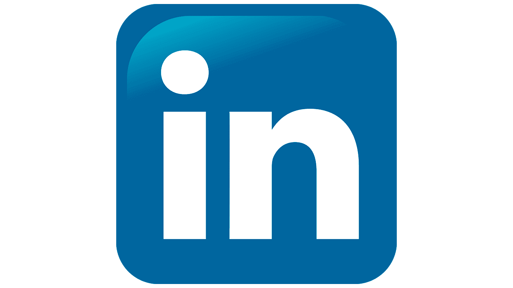

<html lang="en" dir="ltr">
  <head>
    <meta charset="utf-8">
    <meta name="viewport" content="width=device-width, initial-scale=1, shrink-to-fit=no">
<link rel="stylesheet" type="text/css" href="test/style.css">
<link href="https://cdn.jsdelivr.net/npm/bootstrap@5.0.2/dist/css/bootstrap.min.css" rel="stylesheet">
<script src="https://cdn.jsdelivr.net/npm/bootstrap@5.0.2/dist/js/bootstrap.bundle.min.js"></script>
    <title>Progetto Start2Impact</title>
  </head>
      </html>

    <div class="container px-sm-0">
  			<nav id="navbar" class="animate__animated  navbar navbar-expand-md navbar-light">
  				<div class="d-flex flex-grow-1">
  					<a class="navbar-brand py-3" href="index.php" aria-label="">

  					</a>
  				</div>
  				<button class="navbar-toggler" type="button" data-toggle="collapse" data-target="#myNavbar" aria-controls="myNavbar" aria-expanded="false" aria-label="Toggle navigation">
  					<span class="navbar-toggler-icon"></span>
  				</button>

  				<div class="collapse navbar-collapse flex-grow-1 text-right text-center" id="myNavbar">
  					<ul class="navbar-nav ml-auto flex-nowrap">
  						<li class="nav-item">
  							<a href="#chi-sono" class="nav-link">Chi Sono</a>
  						</li>
  						<li class="nav-item">
  							<a href="#skill" class="nav-link">Skill</a>
  						</li>
  						<li class="nav-item">
  							<a href="#portfolio" class="nav-link">Portfolio</a>
  						</li>
  						<li class="nav-item">
  							<a href="#contatti" class="nav-link">Contatti</a>
  						</li>
  						<li class="nav-item d-flex justify-content-center">
  							<a href="https://www.linkedin.com/in/nicola-lo-caputo-261419116/" target="_blank" class="nav-link">
  								
  							</a>
  							<a href="https://www.facebook.com/nicola.locaputo/" target="_blank" class="nav-link">
  								
  							</a>
  							<a href="https://www.instagram.com/nicola_lo_caputo/" target="_blank" class="nav-link">
  								
  							</a>
  						</li>

  					</ul>
  				</div>
  			</nav>
  		</div>

        <div class="page">

  <a name="chi-sono"></a>
<div class="h1">
    <h1>Chi Sono</h1>
</div>
<br>
      <p>Salve a tutti, Sono Nicola Lo Caputo, sono laureato magistrale in Economia e Commercio all'università di Bari da oramai il 2019. <br> La mia volontà è quella di raccontarvi il mio <a href="images/cv nicola.pdf "target="_blank">curriculum vitae</a>  nella maniera più romanzata possibile andando contro i canoni che vedrebbero il cv breve e di sostanza. Anche perchè come potreste conoscermi da un foglio di una singola pagina che dovrebbe racchiudere esperienze lavorative, formative e di vita? <strong>Impossibile</strong>.
      <br>


<font size="+2"><strong>INIZIAMO!</strong></font>

  <br>
  <a name="skill"></a>
  <div class="h1">
  <h1>Skill</h1>
    </div>
    <br>
<br> Negli ultimi anni sono sempre rimasto più che affascinato dal mondo online: sono diventato un quotidiano fruitore di Twitch, non solo per il gaming <strong>(sono un videogiocatore, lo ammetto!)</strong> ma anche per tutti gli altri contenuti che vengono trattati come anime, politica, film, asmr e puro intrattenimento.
<br>
<br> Questo interesse venne ulteriormente nutrito dalla possibilità di seguire un corso: "Responsabile marketing e vendite e-business" presso la Cooperform Puglia perchè pensavo che tramite esso avrei avuto l'occasione di un unire un mio interesse con il lavoro, fare business col mondo digitale, senza essere il classico impiegato amministrativo che fa fatture dalla mattina alla sera.
<br>
<br>In effetti, ho avuto modo di studiare digital marketing esaminando i vari processi di creazione di un'impresa, ho potuto ragionare sul budget di comunicazione, sulle piattaforme su cui investire, sui risultati attesi, ecc. tutto motivato da un "perchè" in quanto ogni scelta deve avere una motivazione: una lezione non secondaria per me che venivo da degli studi prettamente teorici.
<br>

 <br> Un'esperienza fondamentale per la mia carriera anche perchè è stata l'occassione per conoscere il titolare dell'agenzia che da lì a poco mi avrebbe assunto.
<br>
<br> A settembre scorso, invece, prendo la decisione di iscrivermi a Start2Impact per poter migliorare le mie conoscenze e poter lavorare nel settore del digital marketing. Per questo che nella sezione <a href="portfolio/project.html" target="-blank" >"Start2Impact"</a> vi parlerò di quanto fatto finora e vi farò vedere alcuni progetti.
<br>
Ecco ora puoi scegliere se approfondire le mie competenze e passioni oppure no.
<br>
<br>
<font size="+3"><strong>A te la scelta!</strong></font>
<br>
<br>
<a name="portfolio"></a>
<div class="h1">
  <h1>Portfolio</h1>
</div>
<br>
<p>Ecco i miei progetti</p>
    </div>
